Welcome to Kidzu – Kidzu WordPress Theme Documentation.
- Item Name : Kidzu - Kindergarten & School WordPress Theme
- Created: 01 May 2026
- Item Version : v 1.0
- Author : Gramentheme - Portfolio
First of all, Thank you so much for purchasing this template and for being my loyal customer. You are awesome! You are entitled to get free lifetime updates to this product + exceptional support from the author directly.
This documentation is to help you regarding each step of customization. Please go through the documentation carefully to understand how this template is made and how to edit this properly.
Theme Requirements
To use Kidzu, make sure your hosting provider is running the following software:
- WordPress 4.8 or higher.
- PHP 5.6 or greater. WordPress officially suggests to use PHP 7.4.
- MySQL 5.6 or greater.
Recommended PHP Limits
Many issues that you may run into such as: white screen, demo content fails when importing, empty page content and other similar issues are all related to low PHP configuration limits. The solution is to increase the PHP limits. You can do this on your own, or contact your web host and ask them to increase those limits to a minimum as follows:
max_execution_time 180memory_limit 128Mpost_max_size 64Mupload_max_filesize 32Mmax_input_time = 60max_input_vars = 3000
Also consider upgrading your PHP version to the latest version, the newer the better.
WordPress Information
To install this theme you must have a working version of WordPress already installed. If you need help installing WordPress, follow the instructions in WordPress Codex or check the resources below. Here are all the useful links for WordPress information.
- WordPress Codex – general info about WordPress and how to install on your server
- First Steps With WordPress – general information that covers a wide variety of topics
- FAQ New To WordPress – the most popular FAQ’s regarding WordPress
What's included
When you purchase our theme from Themeforest, you need to download the Kidzu files from your Themeforest account. Navigate to your downloads tab on Themeforest and find Kidzu. Click the download button to see the two options. The Main Files contain everything, the Installable WordPress Theme is just the installable WordPress theme file. Below is a full list of everything that is included when you download the main files, along with a brief description of each item.
-
Installable WordPress file only. You can upload this file when you install the theme.
-
All files and documentation (full zip folder). You will need to extract and locate the installable WordPress file to upload when you install the theme.

Theme Installation
It’s easy to install Kidzu. Just follow these steps, they won’t take much of your time.
-
Download the theme zip file from your
Envato account from
ThemeForest.
- All files & documentation (full zip folder). You will need to
extract and locate the
installable WordPress file to upload when installing the theme.

- Log in to your WordPress Dashboard (Ex: http://yourwebsite.com/wp-admin).
- Navigate to Appearance > Themes.
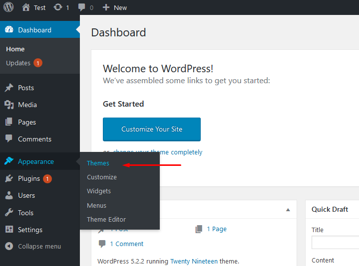
-
Click on Add New and then Click on
Upload Theme .
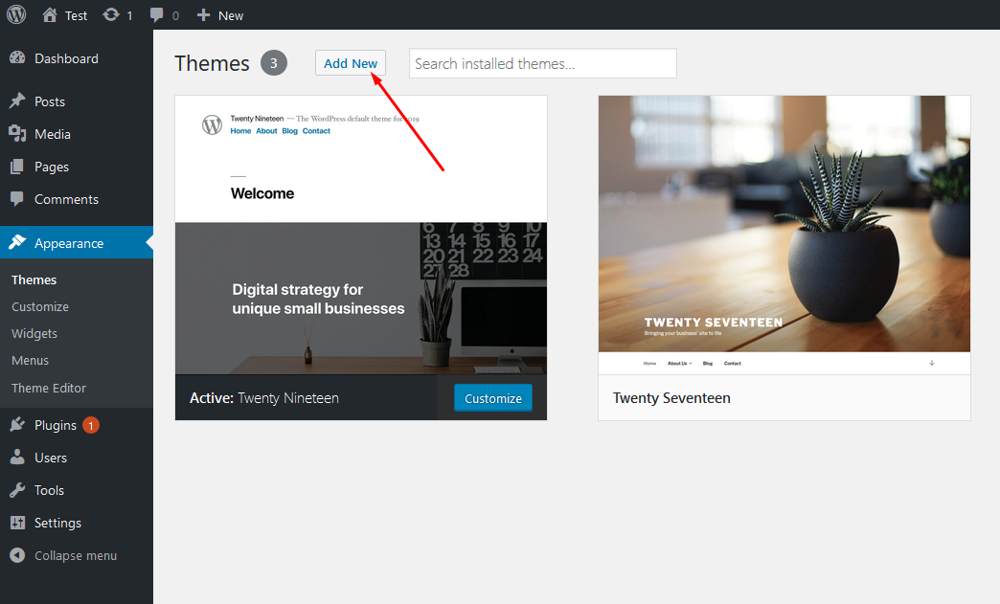
- Click Add New, then click Upload Theme >
Choose File

- When the installation complete, click Activate. You will be
redirected to Themes page with Kidzu activated.
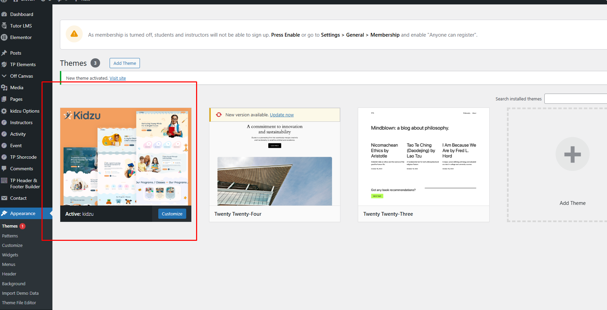
Note: When uploading your theme with the installer, please ensure you are uploading the theme .zip file, not the entire package you downloaded. In this case, you will be uploading Kidzu.zip.
Child Theme Installation
A child theme is a theme that inherits the functionality and styling of another theme, called the parent theme (in this case, Kidzu). Child themes are the recommended way of modifying an existing theme.
Why use a child theme? If you modify a theme directly and it is updated, your changes will be lost. By using a child theme, you can ensure that your modifications are preserved.
- Log in to your WordPress Dashboard.
- Navigate to Appearance > Themes.
- Click Add New > Upload Theme > Choose File.
- Locate the
Kidzu-child.zipfile in your main package and upload it. - Click Install Now and then Activate.
Note: You must have the parent theme (Kidzu) installed for the child theme to work.
Plugin Installation
After activating Kidzu, you will see this notice:
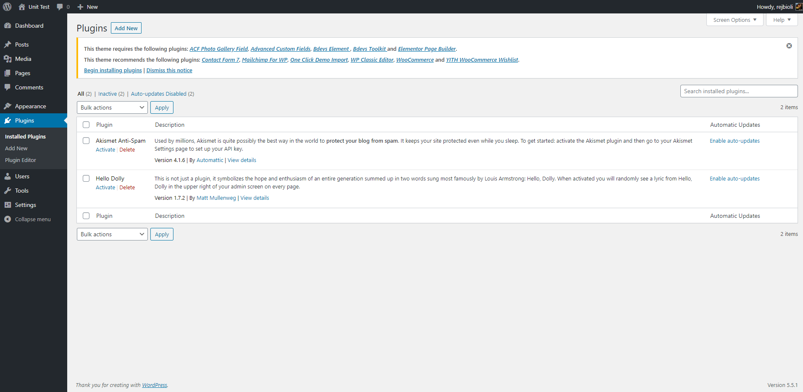
Click Begin installing plugins. You will be navigated to Install Required Plugins page.
Simply check all of them (or all of required plugins and some recommended plugins you like) and from the drop down select Install, then hit Apply.
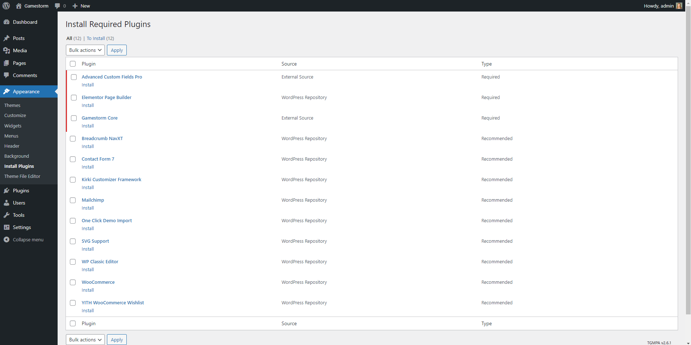
When finishing, it should look like this:
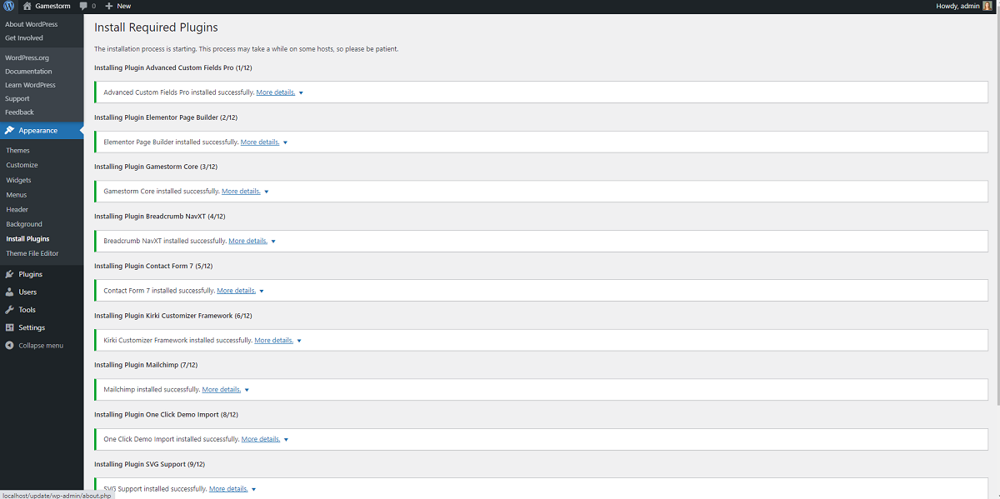
Demo Installation
Our demo data import lets you have the whole data package in minutes, delivering all kinds of essential things quickly and simply. All you need to do is to navigate to Appearance >Import. Hit Import this demo.

Have a cup of coffee. The process is within minutes.

When finishing, it should look like this:
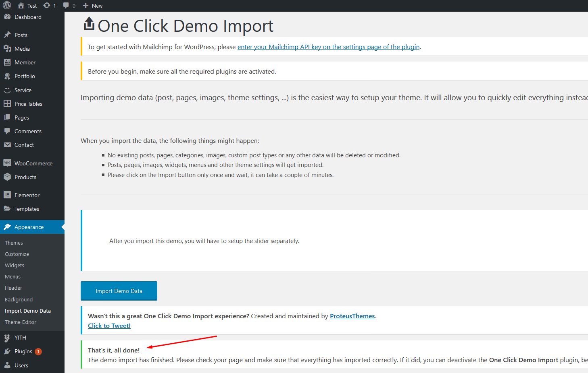
Go to Setting > Reading > Front page displays and choose the page you like to be your front page then hit Save changes.

Free Support System
All of Gramentheme’s items
come with
6 months of included support and free lifetime updates for your Theme.
Once the 6 months of included support is up, you have the opportunity to extend support
coverage up to 6
or 12 months further.
If you choose to not extend your support, you will still be able to submit bug reports
via
email or item
comments and still have access to our online documentation knowledge base and video
tutorials.
We have an advanced, secure ticket system to handle your requests. Support is limited to questions regarding the theme’s features or issues that are related to the theme. We are not able to provide support for code customizations or third-party plugins. If you need help with anything other than minor customization of your theme, we suggest enlisting the help of a developer.
Our Support Mail
All of our items come with free support, and we have a dedicated support email: hi.pixelone@gmail.com to handle your requests. Support is limited to questions regarding the theme’s features or problems with the theme. We are not able to provide support for code customizations or third-party plugins. If you need help with anything other than minor customizations of your theme then you should enlist the help of a developer.
Item Support Includes
- Answering questions about how to use the item
- Answering technical questions about the item
- Help with defects in the item
- Item updates to ensure ongoing compatibility and to resolve security vulnerabilities
Not Included in Item Support
- Theme customization and requests that require or involve custom coding
- Installation of the item
- Hosting, server environment, or software
- Support for compatibility with 3rd party plug-ins
- Support for out-dated or modified themes
For more information on Item Support Policy please refer to the original document..
Use Elementor Page Builder to Build Page
First go to Elementor > Settings and make sure Elementor is active for the post types you want to edit.
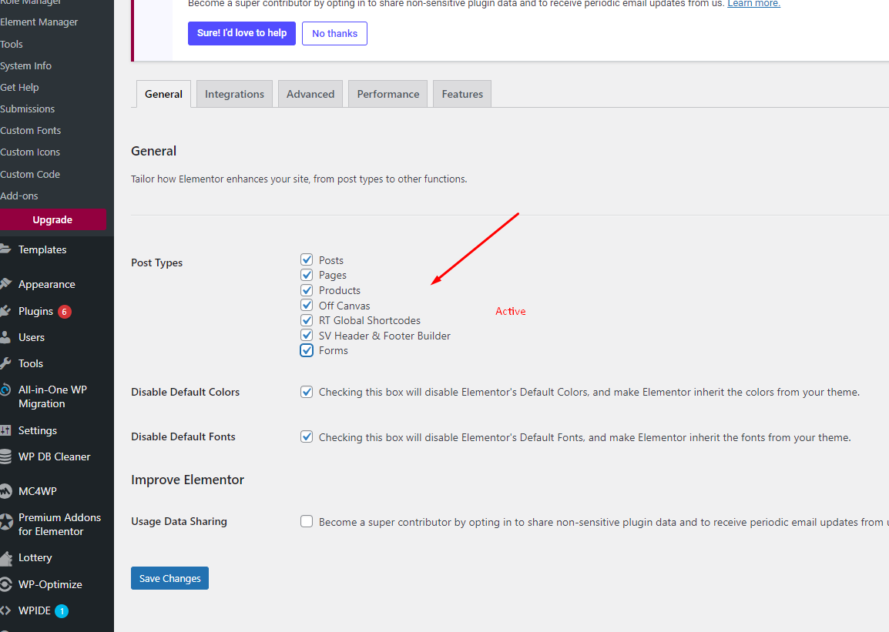
Step 1: Choose Edit With Elementor to edit your page.
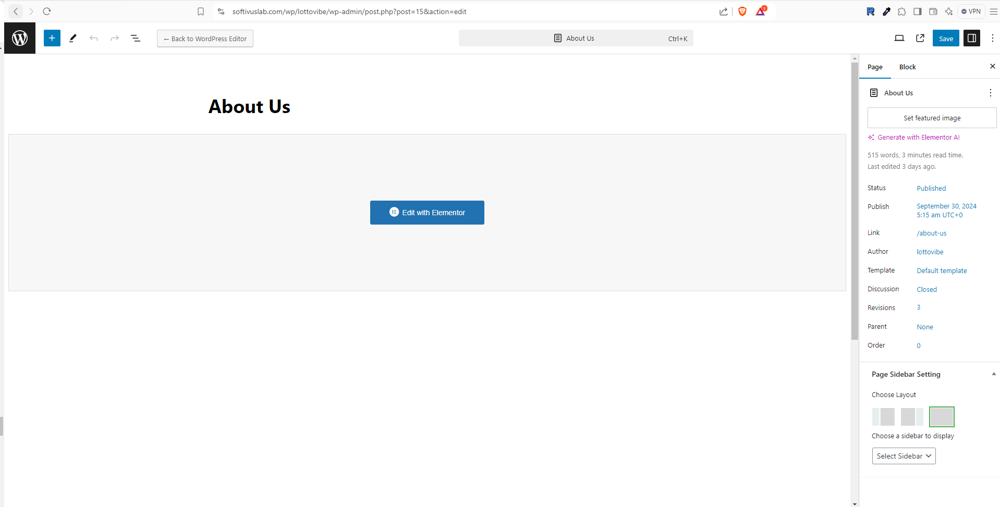
How to Create a New Post
Step 1: Navigate to Posts > Add New in your WordPress admin sidebar.
Step 2: Create a title, and insert your post content in the editing field.
Step 3: For a video/audio post, just simply paste the video/audio URL into the Embed Code field.
Step 4: Add Categories from the right side. Categories is meta information you create for the post. Each category is a meta link that your viewer can click to view similar type of posts. To assign it to the post, check the box next to the Category name. You can also access and edit Categories from the Post sidebar item in your WordPress admin sidebar.
Step 5: Add Tags from the right side. Tags is meta information you create for the post. Each tag is a link that your viewer can click to view similar type of posts. Type the name of the tag in the field, separate multiple tags with commas. You can also access and edit Tags from the Post sidebar item in your WordPress admin sidebar.
Step 6: For a single image, click the first Featured Image Box, select an image and click the Set Featured Image button.
Step 7: You can also customize Page Title & Sidebar Options in Settings.
Step 8: Once you are finished, click Publish to save the post.
Here is the screenshot that shows the various areas of the blog post page:
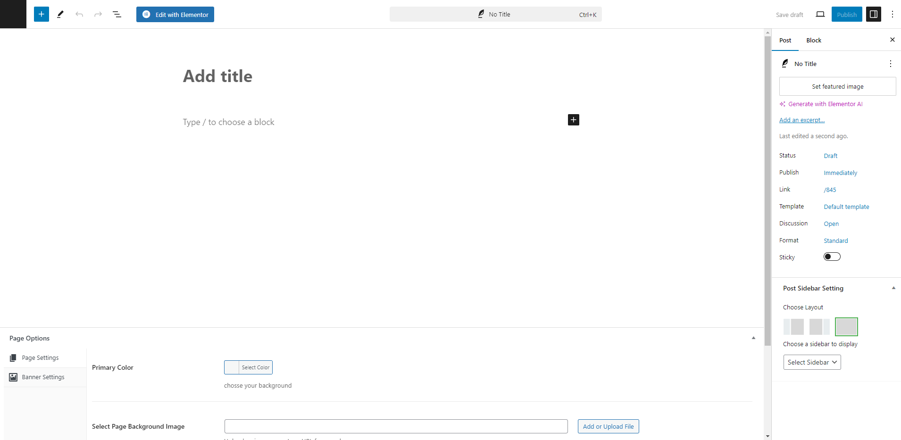
How to Create a Category
Step 1: Post >> Categories
Step 2: Name the category and fill to other section below.
Step 3: Hit Add New Category. Your new Category will appear in the table of all category immediately.
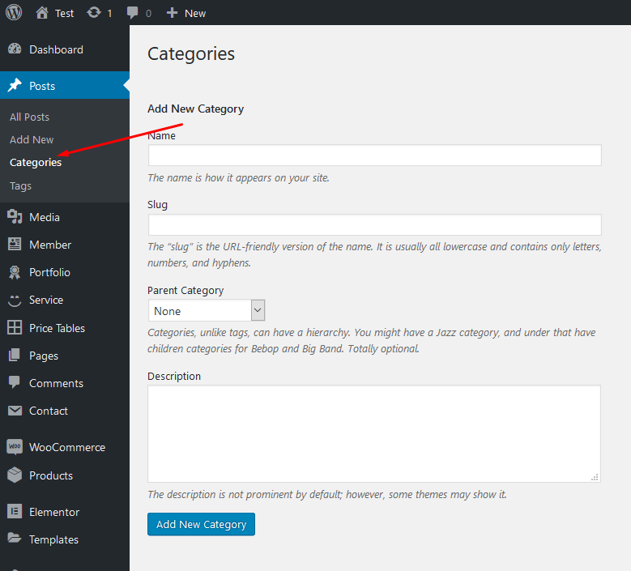
Similar to Category, you can create a new Tag in the same way.
Translation
Kidzu is translation-ready! You can translate the theme into your own language easily using the Poedit software.
Manual Translation (Poedit)
Poedit is a free software for translating themes and plugins into other languages.
- Find the
Kidzu.potfile in the/languages/folder of the theme. - Open it with Poedit.
- Create a new translation and save it as
your-language-code.po(e.g.,es_ES.po) and it will automatically generate the.mofile. - Upload these files to
wp-content/languages/themes/.
Theme Option Panel
If you want to change the general Options of the Theme, go to your WordPress Admin Dashboard Area to Theme Panel. Here you have a tabbed Navigation where you can change a lot of Options of your new Theme:
- General Settings
- Sidebars
- Back to Top Button
- Styling Settings
- Typography settings
- Responsive Typography
- Page Preloader
- Header Settings
- Footer Settings
- Contact Settings
- Blog Settings
- Shop Settings
- Import / Export
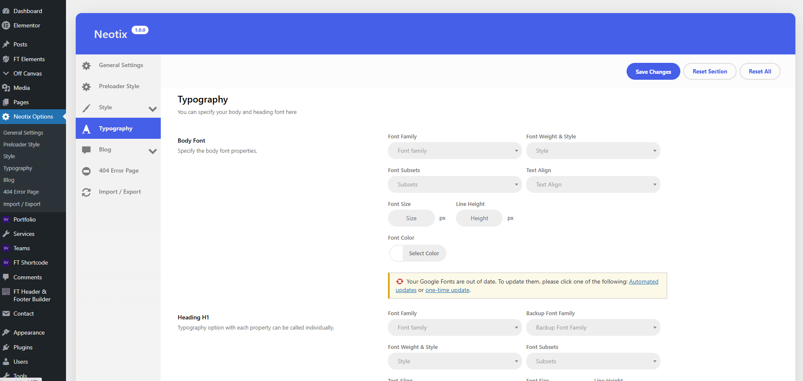
Elementor Widget
To use Elementor widgets, click the Edit with Elementor button on your page.
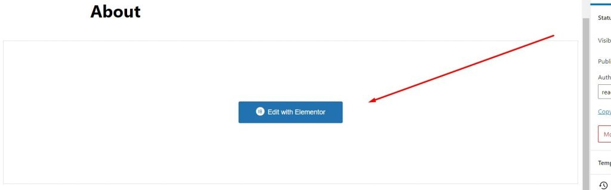

Tutor LMS Plugin Integration
Kidzu supports the Tutor LMS plugin for creating and managing online courses. You can use Tutor LMS to build lessons, quizzes, instructors, and student enrollment features directly from your WordPress dashboard.
Quick Setup
- Go to Plugins > Add New and search for Tutor LMS.
- Install and activate the plugin.
- Open Tutor LMS > Settings and complete the basic setup.
- Create your first course from Tutor LMS > Courses > Add New.
Course Structure (Easy Overview)
A Tutor LMS course is usually organized like this: Course → Topics → Lessons / Quizzes / Assignments. This structure helps students learn step by step and keeps your course content clean and easy to navigate.
- Course - Main container with title, description, price, and settings.
- Topics - Sections that group related lessons (for example: Introduction, Basics, Advanced).
- Lessons - Learning content such as text, video, images, and attachments.
- Quizzes - Tests to measure student understanding after a lesson or topic.
- Assignments - Practical tasks where students submit files/text for evaluation.
Course Content Types You Can Use
You can build engaging courses by mixing different content formats. In most setups, course creators use lesson text, embedded videos, downloadable files, and quizzes together for a better learning experience.
- Text lessons - Clear written explanations and step-by-step guides.
- Video lessons - YouTube/Vimeo/self-hosted videos for visual learning.
- Attachments - PDF, slides, worksheets, or reference materials.
- Assignments - Homework or project-based activities.
- Quizzes - Quick checks, mid-course tests, or final assessments.
Quiz Types in Tutor LMS
Tutor LMS includes multiple quiz formats. You can choose question types based on the learning goal and difficulty of your course.
- Common types (Free) - Single Choice, Multiple Choice, True/False, Fill in the Blanks, Open Ended.
- More advanced types (Pro) - Short Answer, Matching, Image Matching, Image Answering, Ordering.
Tip: Use simple question types for beginner courses and mix advanced question types for higher-level courses to improve student engagement and evaluation quality.
Credits & Sources
We have used the following images, icons, and scripts as listed below:
- WordPress - wordpress.org
- Elementor - elementor.com
- Bootstrap - getbootstrap.com
- Google Fonts - fonts.google.com
- FontAwesome Icons - fontawesome.com
- JQuery - jquery.org
- Unsplash - unsplash.com (Images for Demo Only)
Note: Images used in the demo are for demonstration purposes only and are not included in the main download package.
Thank you for using this theme.
Once again, thank you so much for purchasing this theme. As I said at the beginning, I'd be glad to help you if you have any questions relating to this theme. No guarantees, but I'll do my best to assist. If you have a more general question relating to the themes on ThemeForest, you might consider visiting the forums and asking your question in the "Item Discussion" section.